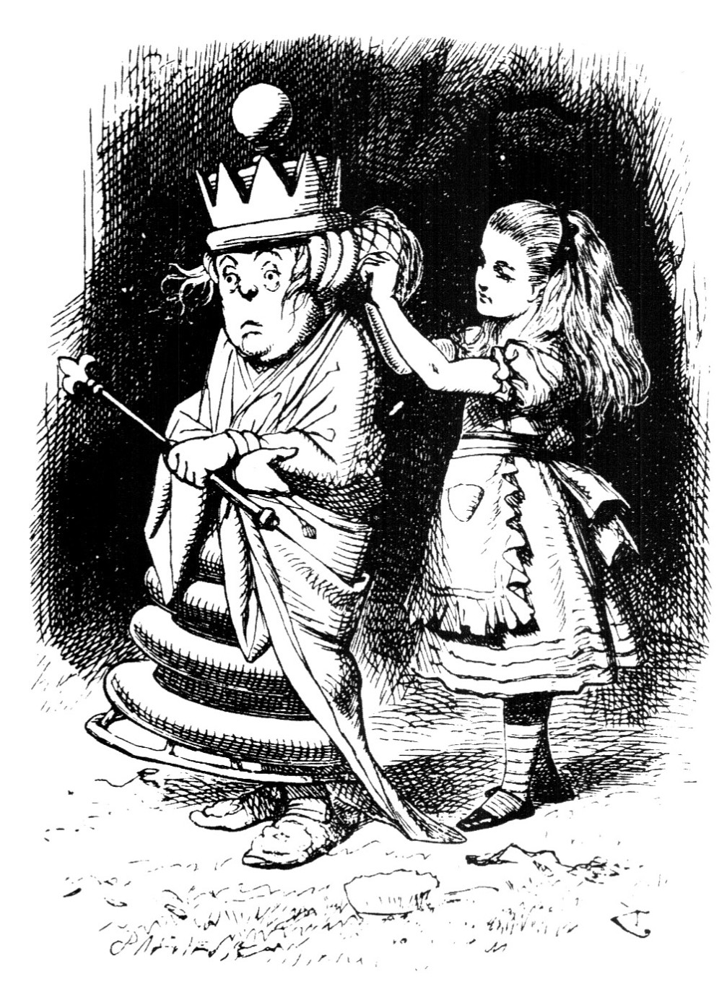
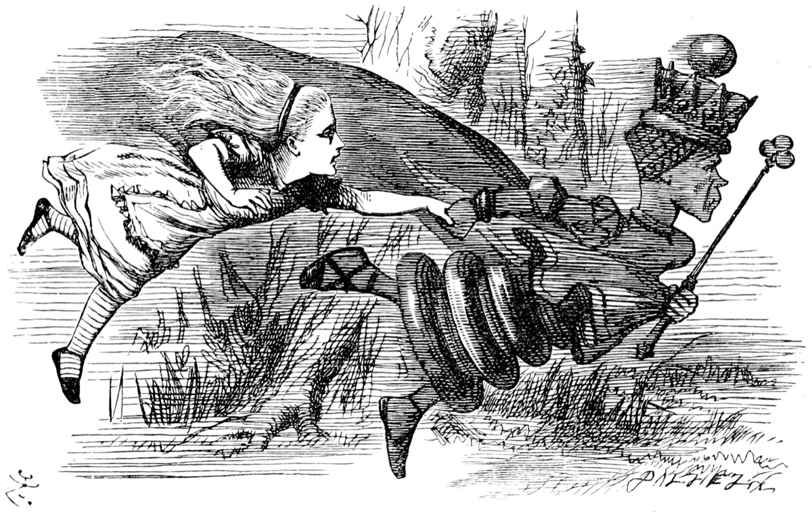
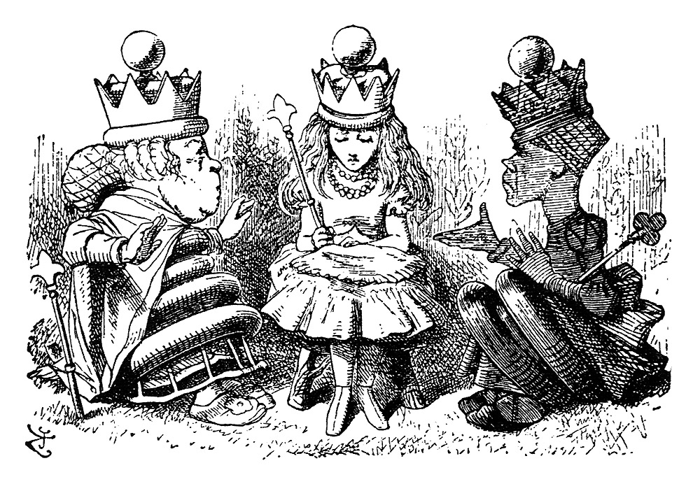

Services & prices
Hair color, highlights, balayage, cuts, keratin smoothing and extensions in Sterling, VA. Prices marked + are starting prices and times are estimates. Pending owner review

$0, 15 minute consultationGloss included on most colorFormaldehyde-free keratin

